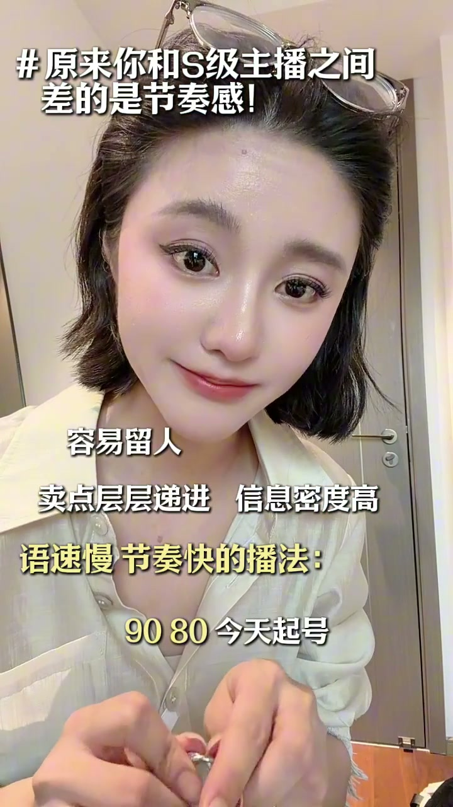

核心：语速慢、节奏快
00:00主播最牛逼的感觉就是语速慢、节奏快。很多主播表达不明白，想快一点——他要的是节奏快点，不是语速快点；要你慢点，是语速慢点，不是节奏慢点。
[00:08] 核心概念：语速慢、节奏快——语速≠节奏
Core concept: slow speech, fast rhythm — speech speed ≠ rhythm
市场常态：语速快、节奏慢
00:15语速快、节奏慢是市场的常态，百分之八十的主播都是这样播的。
[00:24] 80%主播的常态：语速快、节奏慢——信息稀碎又拖沓
The norm for 80% of streamers: fast speech, slow rhythm — fragmented and dragging info
演示1：语速快、节奏慢版
00:24“欢迎新家准备解锁们！大家可以看一下，这条项链一共有五种带法，给大家看一下。来首先第一种带法呢，宝贝是这样子的啊，第一种带法直接当一个链条这样戴就可以了，是不是？也是一个非常好看的。然后呢我们还有第二种带法，第二种带法就直接这样子哈，双层，是PU的，你平常搭配些小裙子全部都可以的…”
00:51博主点评：这一段其实已经不差了，并没有往很差的去演示。我们来看第二段：语速慢、节奏快的。
[00:40] 拖沓版：五种带法逐条啰嗦，被废话淹没
The dragging version: all five ways explained verbosely, drowned in filler
演示2：语速慢、节奏快版
00:58这条项链五种带法：第一种带法，修行凭酷；第二种带法，修行小系列；第三种带法，优雅双层；第四种带法，稍微来点小个性；第五种带法，我最喜欢的一种，非常王炸——它是一个扣子，搭配T恤就这样子，好看。链条银饰，八股线高温点的五层工艺。
[01:00] S级版：五种带法一句话一个，优雅双层/王炸扣头
S-tier version: five ways to wear it, one sentence each — elegant double layer / showstopper collar
S级收尾
01:33喜欢吗？改一下后台，今天起号让你感受一下我们源头的格局魅力。宝贝，这种品质这个价格你在外面打着灯笼都找不到。兵衔衔全部安排上，前十名牌拼手做墙，前十名牌的全部在场，3 2 1 上！
02:01你看他的语速很慢，但他节奏很快，用户看着就爽。

[01:40] S级收尾：慢速讲品质+快速逼单，3 2 1 上
S-tier closing: slow pitch on quality + fast push to order — 3, 2, 1, go
你看他的语速很慢，但他节奏很快，用户看着就爽。